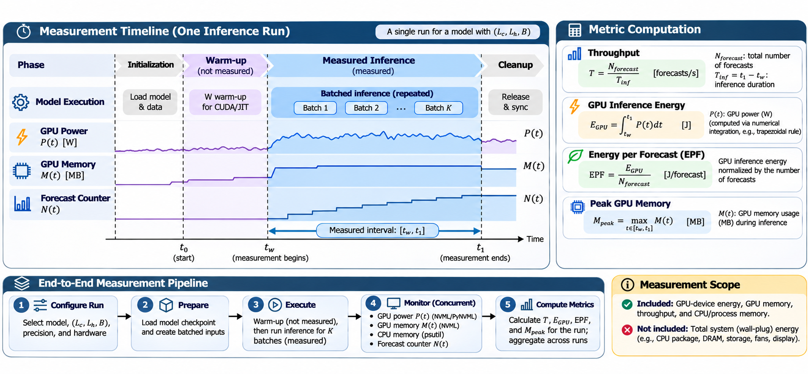
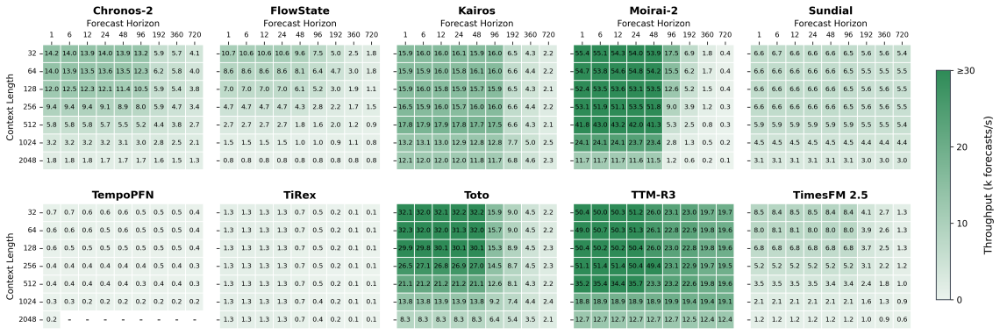
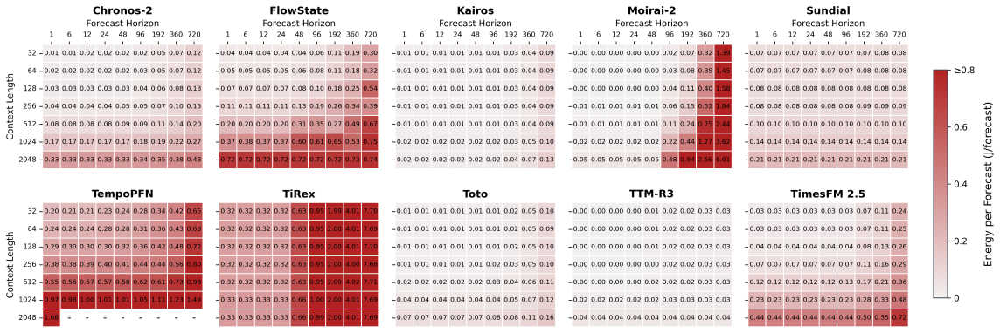
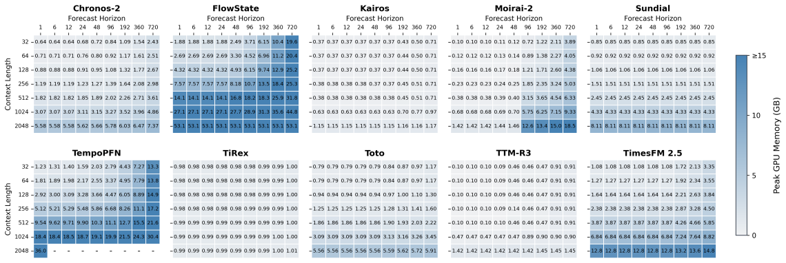
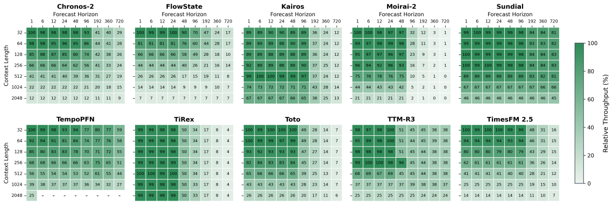
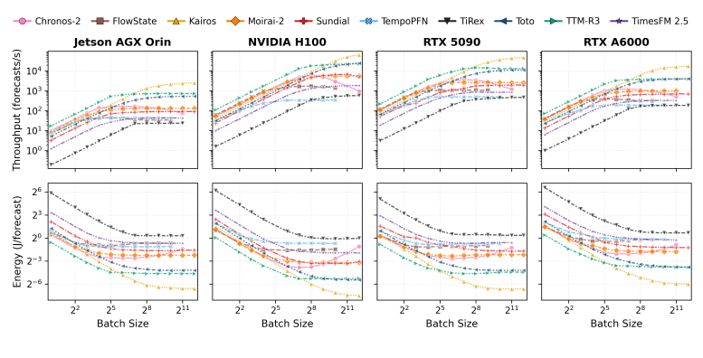
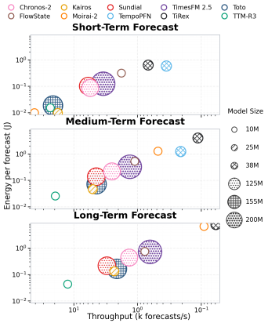

01
Workload-aware evaluation
Vary context length, forecast horizon, and batch size to expose how inference behavior changes across forecasting workloads.
ForecastPowerBench is a workload-aware benchmark for studying the inference efficiency of time series foundation models (TSFMs). It examines how context length, forecast horizon, batch size, model architecture, and hardware shape throughput, energy consumption, and memory requirements.
Forecasting accuracy is only one part of deployment suitability. ForecastPowerBench evaluates 10 time-series foundation models across four NVIDIA platforms, measuring how context length, forecast horizon, batch size, and hardware affect inference throughput, energy per forecast, memory use, and feasibility.
Vary context length, forecast horizon, and batch size to expose how inference behavior changes across forecasting workloads.
Consider throughput, energy per forecast, and peak memory together rather than treating speed as the only deployment criterion.
Compare model behavior on a high-end accelerator, workstation GPUs, and an edge platform, while accounting for platform-specific constraints.
ForecastPowerBench combines software-instrumented inference measurements with GPU-device telemetry. Throughput and timing are measured around the benchmark execution path; energy is reported from the GPU power domain only, not as whole-machine or wall-plug energy.
EPF is the GPU-reported energy consumed during the timed inference interval, normalized by the number of forecast windows completed in that interval.
Record the workload configuration, warm-up policy, measurement duration, repeat identifiers, power mode, telemetry scope, and run status. Report variability across repeated measurements.
Each run fixes a model, GPU, context length, forecast horizon, and batch size. Warm-up is excluded; software counters and GPU telemetry are collected during inference.

Select model, GPU, context length, horizon, and batch size.
Run warm-up iterations before measurement; exclude them from metrics.
Time inference, count completed windows, and sample GPU telemetry concurrently.
Repeat runs and calculate throughput, EPF, and peak memory.
The benchmark records elapsed time and completed forecast windows. Model-call timing and pipeline overhead are retained separately where available.
PyNVML collects GPU power, memory, and utilization; psutil records CPU/process memory. Only GPU power contributes to EPF.
Completed forecast windows per second over the measured interval.
EGPU is the time-integral of sampled GPU power; EPF is reported in J/window.
Maximum observed GPU memory during the measured inference interval.
Warm-up settings, repeat IDs, completion status, OOM/error counts, throttling flags, telemetry sample counts, and aggregate statistics are retained where available.
The benchmark covers 10 TSFMs and four NVIDIA platforms. The workload grid contains 7 context lengths × 9 forecast horizons = 63 context–horizon pairs, where supported.
7 tested settings
9 tested settings
Exact sweep: powers of two, subject to memory limits
Transformer, SSM, recurrent, xLSTM, and mixer families
Cloud, workstation, and edge deployments
7 context lengths × 9 horizons per sweep, where supported
Add longer contexts, new horizons, batch sizes, models, or devices as the benchmark evolves.
Configurations unsupported by a model or exceeding available memory are treated as feasibility limits, not as valid measurements.
Increasing context length generally reduces throughput, but the magnitude varies widely. Longer horizons can cause sharp degradation for some models, while others remain comparatively stable.
Models with different parameter counts show distinct throughput, energy, and memory requirements. Deployment choices need measured system performance, workload sensitivity, and feasibility—not model size or architecture labels alone.
Choose a context length and forecast horizon to compare available models by throughput and energy per forecast (EPF). The visualizer reads the published JSON result files directly; rankings update when you change the workload or hardware.
Higher throughput is better. Lower EPF is better. Only models with a measurement for the selected configuration are shown.
Forecast windows processed per second.
Loading throughput data…
Energy consumed per forecast window, in joules.
Loading EPF data…
| Model | Throughput rank | Throughput (windows/s) | EPF rank | EPF (J/forecast) | Peak GPU memory (GB) |
|---|---|---|---|---|---|
| Loading data… | |||||
Select hardware and workload above, then balance throughput against representative forecasting accuracy.
Waiting for system and accuracy data…
| Rank | Model | Throughput | Normalized throughput | Representative MASE | Accuracy utility | Combined score |
|---|---|---|---|---|---|---|
| Loading accuracy data… | ||||||
Throughput is min–max normalized (higher is better); MASE is normalized in reverse (lower is better). MASE is aggregated once per model for each broad Short/Medium/Long regime. For every selected workload, the visualizer assigns the nearest regime anchor using both context length and horizon (normalized log-distance), then reuses that regime-level MASE across the corresponding workload region. It is a representative accuracy reference, not an exact per-workload score; accuracy can vary with domain, dataset, and sampling frequency. Throughput remains specific to the selected hardware and workload.
Rankings are calculated separately for each metric and selected workload. Models missing a measurement for the selected hardware, context, horizon, or batch size are not included. EPF uses the energy-per-window field provided by each result file.
Explore the trade-off between throughput and Energy per Forecast (EPF) for each model. Each point represents one model under the selected hardware and forecasting workload. The upper-left region is preferable: lower energy per forecast and higher throughput.
Hover over a point for exact values. Select a model in the legend to hide or show it. The dashed line shows the Pareto frontier.
The default logarithmic axes make models with widely differing throughput and EPF easier to compare. Switch to linear axes for an absolute-scale view. Points are aggregated by model when more than one measurement row matches the selected configuration. The Pareto frontier includes models that are not dominated in both objectives.
Explore six vector figures from ForecastPowerBench. The H100 heatmaps show how workload dimensions affect throughput, energy, and memory; the final comparisons extend the view across hardware and batch-size configurations. Select any plot to open its full-resolution SVG.
Four complementary views of context-length and forecast-horizon scaling.

Forecast-window throughput across the evaluated context-length and forecast-horizon configurations.
Open full-size SVG
Energy consumed per forecast window, exposing how inference energy changes with workload size.
Open full-size SVG
Peak memory use across forecasting workloads, highlighting the resource demands of different configurations.
Open full-size SVG
Normalized throughput reveals workload sensitivity separately from absolute differences in model speed.
Open full-size SVGSystem-level comparisons beyond a single device or workload slice.

Compare the throughput and energy behavior of the evaluated models across the benchmark hardware platforms.
Open full-size SVG
Side-by-side system-efficiency views for the batch-512 workload comparison.
Open full-size SVG
To enable reproducibility, we provide the code, data, and documentation needed to reproduce the paper's findings.
Publish the benchmarking code, model adapters, launch scripts, telemetry collectors, and environment instructions.
Machine-readable measurements are organized by model variant and hardware in JSON files.
Report the software environment, power mode, warm-up, measurement interval, telemetry scope, and aggregation procedure alongside results.
Citation details hidden for peer review.
@inproceedings{forecastpowerbench,
title = {ForecastPowerBench: Benchmarking the Inference Efficiency of Time Series Foundation Models},
author = {ForecastPowerBench authors},
booktitle = {Preprint},
year = {2026},
url = {ForecastPowerBench project page}
}